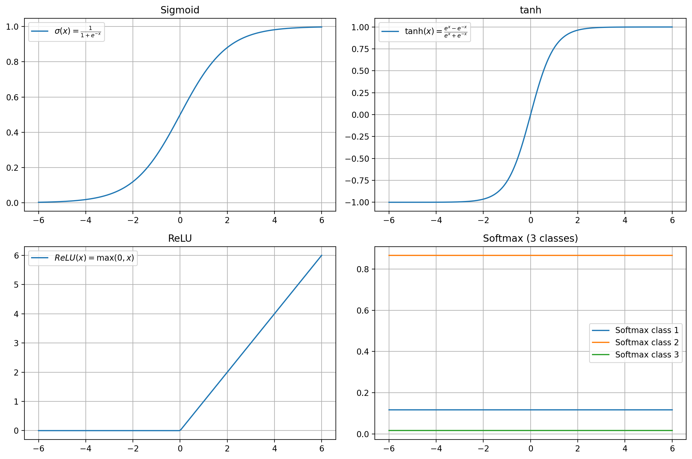

活性化関数とは？
概要¶
活性化関数とは、ニューラルネットワークにおいて 非線形性を導入するための関数 です。
これにより、単純な線形モデルでは表現できない複雑なパターンを学習できるようになります。
例えば Sigmoid は (0~1)、tanh は (-1~1)、ReLU は (0~∞) の範囲で値を返し、関数ごとに出力範囲が異なります。
活性化関数がないとどうなる？¶
- ニューラルネットワークは入力ベクトルに重みやベクトルを付けて足し合わせることを層ごとに繰り返しています。
- もし活性化関数がなかったら、どれだけ層を重ねても「ただの足し算と掛け算の組み合わせ」にしかなりません。
- 数学的には「線形変換の合成」は、結局ひとつの線形変換と同じになるので、1層の線形モデルと表現力が変わらないのです。
👉 つまり、活性化関数がなければニューラルネットワークは「深い回路を作っても意味がない」状態になります。
👉 活性化関数を入れることで、はじめて「曲線的な境界」や「複雑なパターン」を学習できるようになります。
関数の処理¶
活性化関数は、各ノードに入力される 重み付き和（線形結合）
$$
z_j = \sum_i w_{ij} x_i + b_j
$$
を受け取り、非線形に変換して出力します。
この出力が次の層への入力値となります。
メジャーな活性化関数¶

Sigmoid（シグモイド）¶
$$
\sigma(x)=\frac{1}{1+e^{-x}}
$$
- 🎯出力範囲: \(0∼1\)
- ✨特徴: 入力を滑らかに押しつぶし、確率のような解釈が可能。
- 👍長所: 2値分類などで確率的な出力を得たいときに便利。
- ⚠️短所: 大きな正負の値で勾配がほぼ0になりやすく、勾配消失問題を引き起こす。
- 💡用途: 古典的なニューラルネットワークや出力層（2値分類）で使われる。
tanh（タフ）¶
$$
\mbox{tanh}(x)=\frac{e^{x}-e^{-x}}{e^{x}+e^{-x}}
$$
- 🎯出力範囲: \(-1∼1\)
- ✨特徴: Sigmoid と似ているが、出力が0中心になる。
- 👍長所: 平均が0付近に揃いやすく、学習が安定しやすい。
- ⚠️短所: Sigmoidと同様に大きな値で勾配消失が起きやすい。
- 💡用途: 隠れ層の活性化関数として使われる（特にRNNなどで昔よく利用された）。
ReLU（Rectified Linear Unit）¶
$$
\mbox{ReLU}(x)=\max(0,x)
$$
- 🎯出力範囲:\(0∼\infty\)
- ✨特徴: 負の入力は0、正の入力はそのまま出力。
- 👍長所: 計算が単純で高速、勾配消失が起きにくい。深層学習で主流。
- ⚠️短所: 負の値に対して勾配が0になるため、ニューロンが死ぬ（dead neuron）問題がある。
- 💡用途: CNNや多層パーセプトロンの隠れ層で最もよく使われる。
Softmax¶
$$
\mbox{Softmax}(z_{i})=\frac{e^{z_[i]}}{\sum_{j}e^{z_{j}}}
$$
- 🎯出力範囲: \(0∼1\)、かつ全体の和は1
- ✨特徴: 入力ベクトル全体を確率分布に変換する。
- 👍長所: 多クラス分類において、各クラスの「確率」として解釈できる。
- ⚠️短所: 出力値がクラス数に依存し、外れ値や異常値に弱い。
- 💡用途: 多クラス分類の出力層（例：画像分類で犬・猫・鳥を分類）。